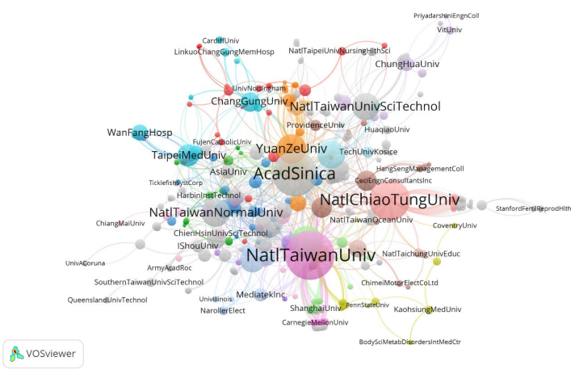
Convergence of technological social changes in the development of intelligent technology innovation system in Taiwan
以 WoS 與專利資料的科學計量圖譜、社會網絡分析、AHP 與訪談，描繪台灣智慧科技創新系統中技術與社會變遷的匯流。
Published work and manuscripts in review or revision, each with a Chinese summary, a figure and a link to its open code.
已發表與審查、修改中的論文，每篇附中文簡介、一張圖，以及公開程式的連結。

以 WoS 與專利資料的科學計量圖譜、社會網絡分析、AHP 與訪談，描繪台灣智慧科技創新系統中技術與社會變遷的匯流。
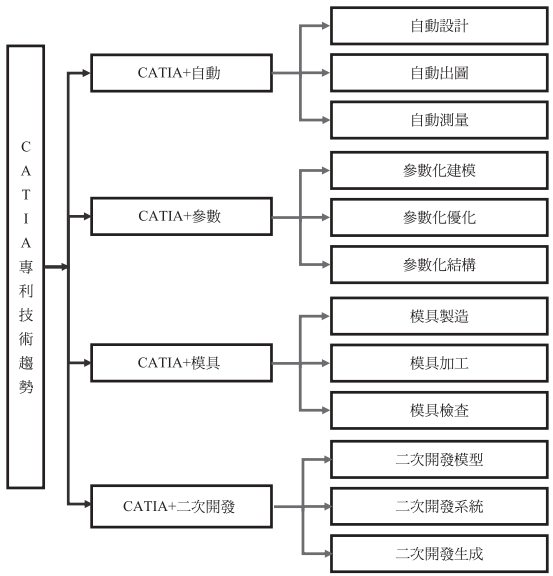
分析 1983–2020 年中國大陸、美國、歐盟、日本與臺灣的 CATIA 相關專利申請案，以 AHP 與德菲法找出關鍵技術佈局：各國皆以自動化設計為主，G06F 119 是快速崛起、應及早佈局的技術。
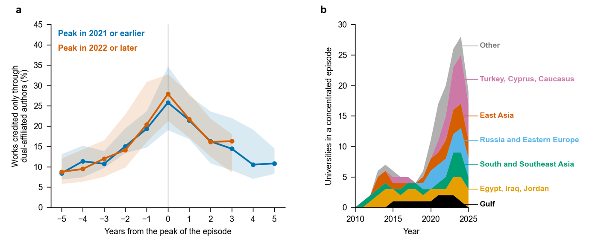
各國把大學排名寫進移民與政策門檻。完整重算萊頓排名後發現，少數跨國掛名作者就能讓大學名次大幅移動（完整計數中位數 221 名，分數計數 86 名），三分之一跨過法規使用的名次線。
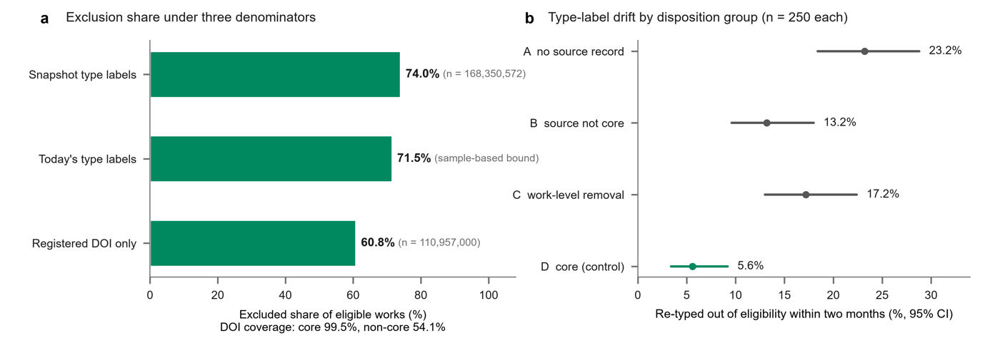
稽核以 OpenAlex 建立的萊頓排名開放版（2,831 所大學）：指標實際涵蓋的產出比例從 9% 到 99% 不等，同一個指標標籤背後的範圍差距很大，卻沒有被揭露。
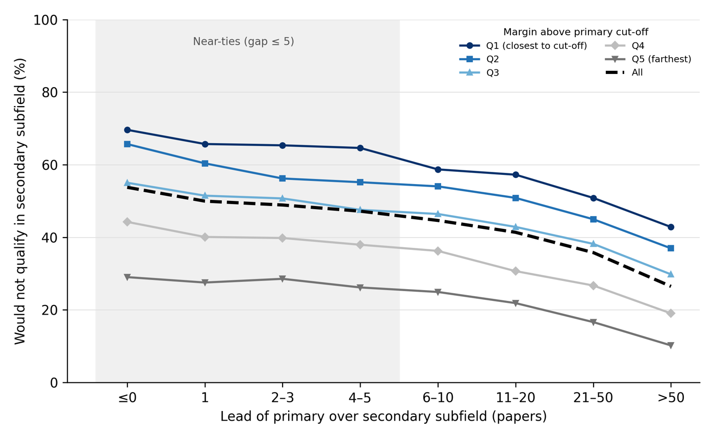
史丹佛—Elsevier「前 2% 科學家」名單已被用於薪資與獎勵；本文檢驗子領域歸屬如何改變誰能進入名單，以及這些名單作為制度規則有多穩健。
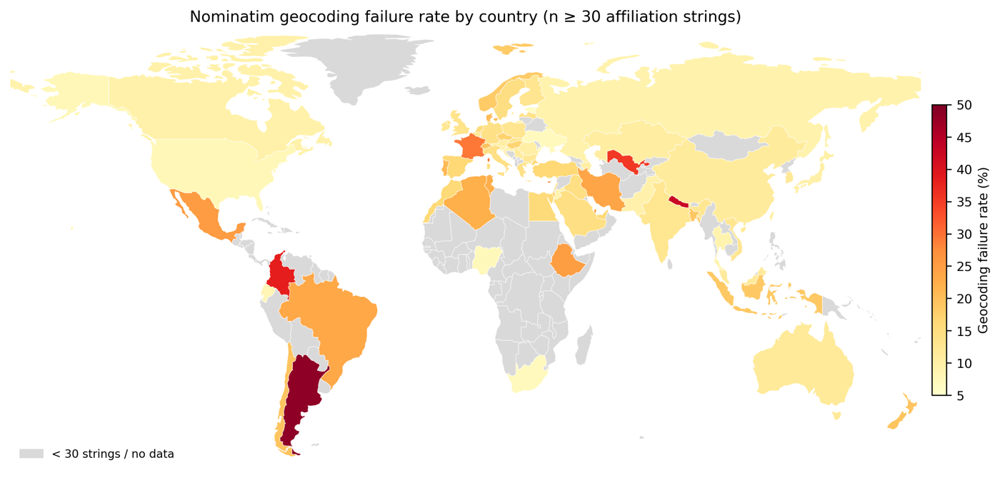
OpenAlex 機構資料的地理定位失敗並非隨機，而是集中在特定國家與地區；本文量化這種缺漏，並說明以反機率加權校正的極限。
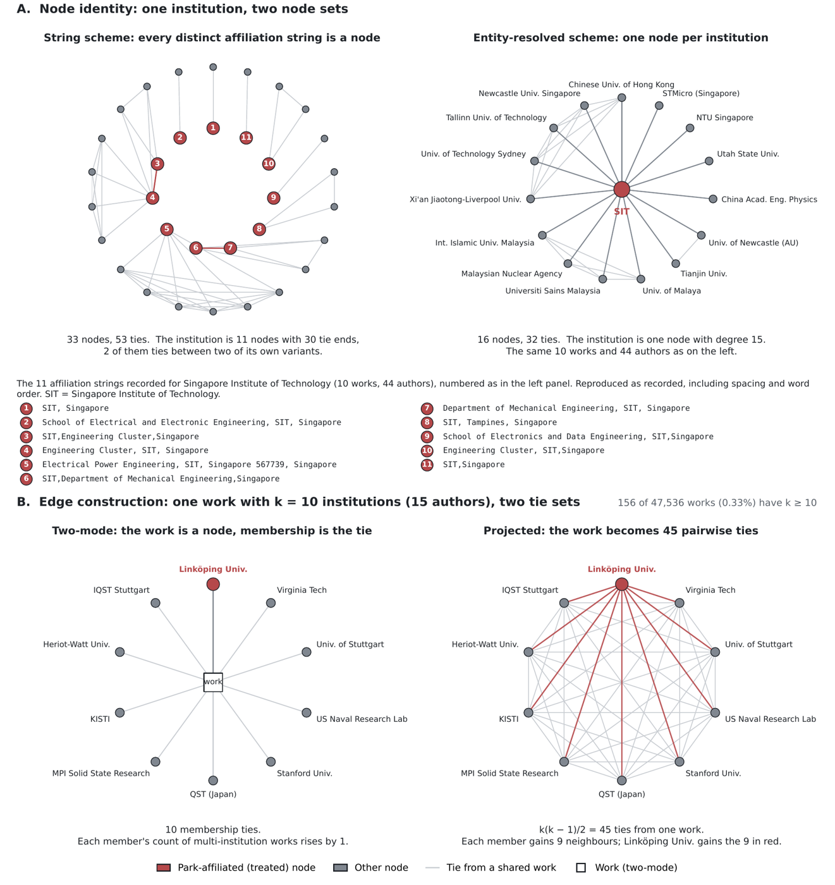
以機構字串建構共同成員網絡時，網絡的建構方式會產生假節點與投影邊；本文說明這些建構選擇如何影響共變數推論。
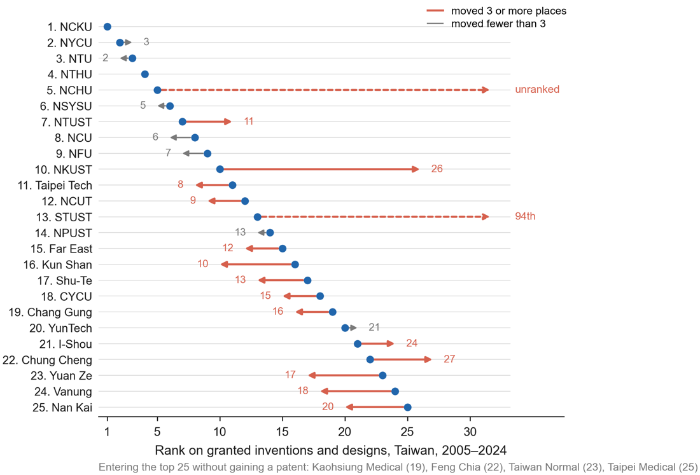
以台灣為例，大學專利的受讓人名稱比對規則不同，算出的大學專利數就不同；本文量化名稱消歧對專利指標準確度的影響。
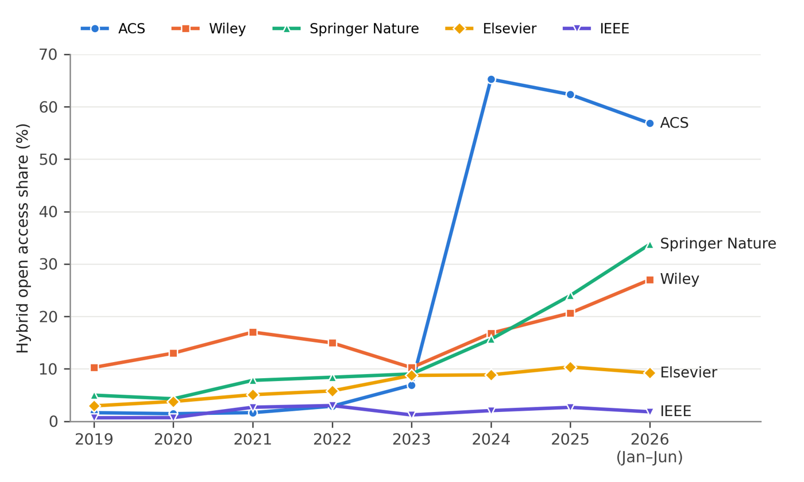
分析台灣 2019–2026 年的轉型協議與折扣協議：協議是否全額涵蓋出版費，會改變作者選擇開放取用的決定。
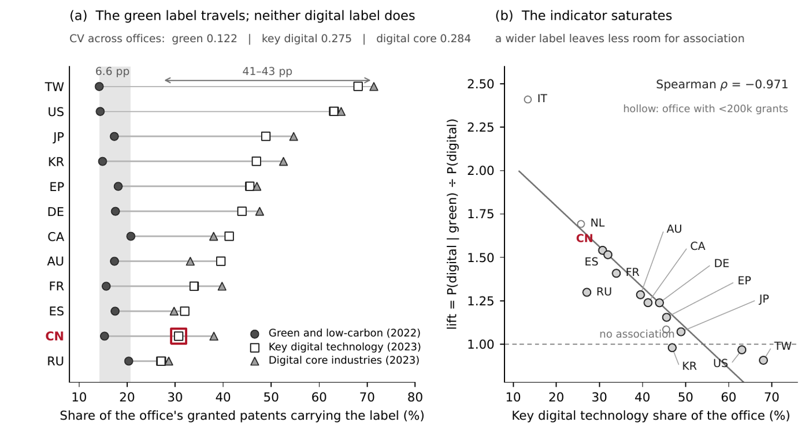
各國官方技術分類用同一個標籤，指的卻不是同一批技術；本文檢視這種差異如何影響綠色與數位「雙轉型」的跨國證據。
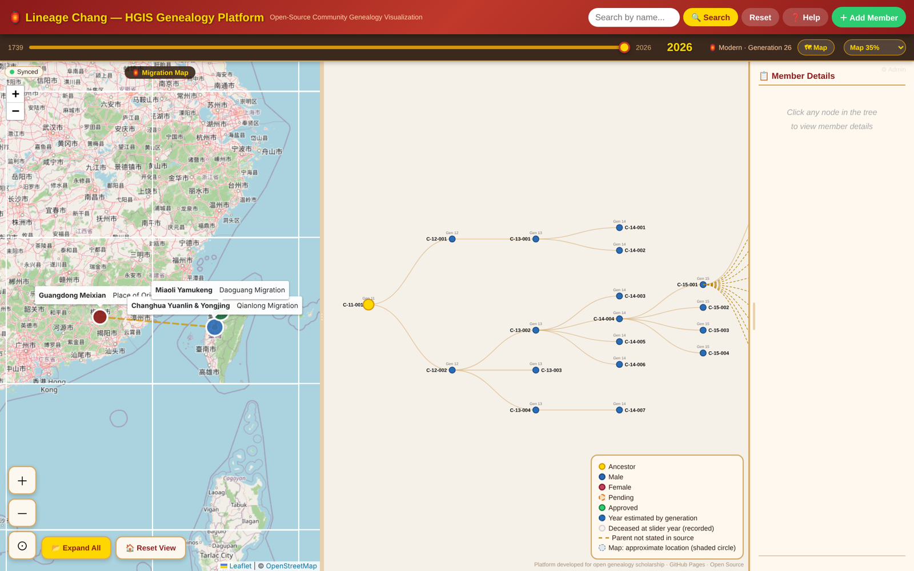
以歷史地理資訊系統視覺化一個客家宗族的族譜檔案，說明樹狀結構在呈現親屬關係上的限制，並以視覺化作為檢查資料的工具。
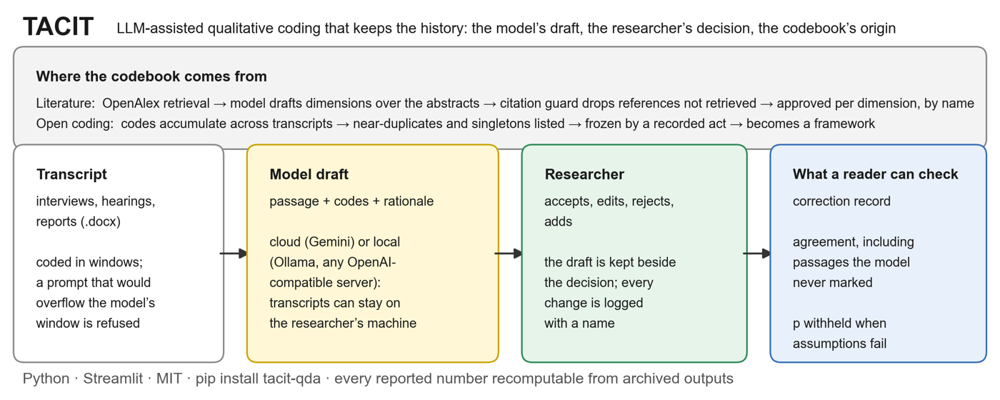
可在本機部署的 Python 工具，以大型語言模型輔助質性編碼，並完整記錄編碼簿的來源與修改歷程，讓編碼過程可稽核。
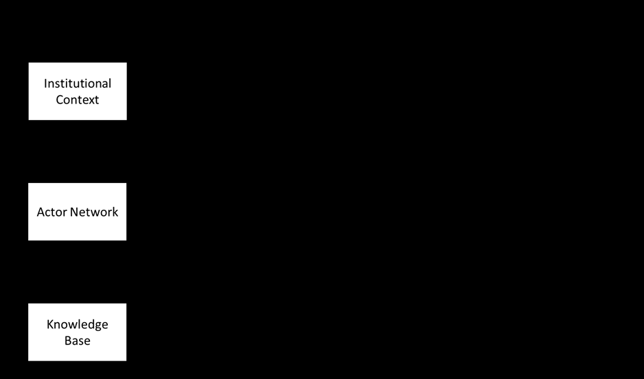
在科技創新系統架構下，以混合多準則決策分析探討綠色科技轉型的關鍵因素。
Papers in progress, with provisional titles and the journal each is being prepared for. Titles and targets may change.
進行中的論文，題目為暫定，並列出預計投稿的期刊；題目與期刊都可能調整。
| Provisional title 暫定題目 | Target journal 目標期刊 | Stage 進度 |
|---|---|---|
| Where OpenAlex loses the institution: coverage gaps in authorship–institution matchingOpenAlex 機構覆蓋缺口 | Scientometrics | Analysis in progress 分析中 |
| Do bibliographic databases really merge citations to a preprint and its published version?資料庫是否真的合併預印本與正式版的被引 | Journal of Informetrics | Analysis in progress 分析中 |
| Is AI widening the global gap in health research?AI 是否拉大全球健康研究落差（與 INGENIO 合作） | Health Research Policy and Systems | Draft 初稿 |
| Where does the evidence behind lifestyle guidelines come from? A geographic audit生活方式指南的證據從哪裡來 | Government Information Quarterly | Draft 初稿 |
| A multilingual benchmark for matching affiliation strings to ROR, with an LLM-based matcher機構字串對到 ROR 的多語言基準與 LLM 比對器 | Information Processing & Management | Design complete 設計完成 |
| Auditing passport rankings: equal-weight counting as one extreme of reasonable construction護照排名稽核 | Social Indicators Research | First analysis complete 第一輪分析完成 |
| Doing bibliometrics with OpenAlex: data-quality problems and a checklist用 OpenAlex 做書目計量：資料品質問題與檢查清單 | Journal of Documentation | Planned 構想 |
| Concentrated affiliation episodes: an institution-level inventory for research integrity機構層級的集中掛名事件清單（研究誠信） | Research Policy | Planned 構想 |
| Has OpenAlex fixed it? Institution and string gaps across two snapshotsOpenAlex 有沒有修好：兩份快照的縱貫比較 | Journal of Informetrics | Planned 構想 |
| From ‘peer-reviewed’ to ‘SSCI-indexed’: a document-type loophole in Taiwan’s evaluation rules從「同儕審查」到「SSCI 收錄」：台灣評鑑規則的文件類型漏洞 | JASIST | Planned 構想 |
| Do visa restrictions change global scientific mobility and collaboration?簽證限制是否改變全球科學人才流動與合作 | Nature Human Behaviour | Planned 構想 |
| How accurately is open-access status measured? Record-level disagreement among OpenAlex, Unpaywall and other sourcesOA 狀態量得準不準：各來源的逐篇分類差異 | JASIST | Planned 構想 |
| Did transformative agreements change where authors publish? A natural experiment from Taiwan轉型協議是否改變作者投稿去向：台灣的自然實驗 | Quantitative Science Studies | Planned 構想 |
| Do article processing charges stratify authors by funding? A global comparisonAPC 是否把作者按經費分層：全球比較 | Scientometrics | Planned 構想 |
| Where APCs meet evaluation: high-volume paid open-access journals and SSCI/SCI-only rules in TaiwanAPC 與評鑑的交會：付費高產量 OA 期刊與台灣「只看 SSCI／SCI」 | Scientometrics | Planned 構想 |
| How far can free green open access go? Institutional repositories versus paid agreements in Taiwan免費的綠色 OA 能做到多少：機構典藏與付費協議的成本比較 | Learned Publishing | Planned 構想 |
| Do classic indicators survive the move to open data? Triple-helix mutual information, Rao–Stirling diversity and fractional counting recomputed in OpenAlex經典指標換到開放資料還成立嗎：在 OpenAlex 重算三螺旋互資訊、Rao–Stirling 多樣性與分數計數 | Journal of Informetrics | Planned 構想 |
| Can results from unmaintained scientometric software still be reproduced?停止維護的科學計量軟體，結果還能重現嗎 | JASIST | Planned 構想 |
| Taiwan’s triple helix: co-authorship among universities, industry and government台灣的三螺旋：大學、產業、政府的共同著作 | Scientometrics | Planned 構想 |
53 papers presented at international and Taiwanese conferences since 2021, most with my advisor Shih-Hsin Chen and colleagues; 3 received a best paper award.
2021 年起於國內外研討會發表 53 篇論文，多與指導教授陳詩欣老師及研究團隊合著，其中 3 篇獲最佳論文獎。